The Square
VERY IMPORTANT LINKS
WHAT IS THIS?
The Square is a LEGO map that I felt like building one day. What you see on this page is its digital recreation. The 64-by-64-stud area is divided into 22 uniquely coloured regions, each with a minifigure leader.
HOW TO PARTICIPATE
You can “join” a region on my Discord server (Seal Squad) using my Discord bot (Omega Seal). More information can be found on the Omega Seal page.
HOW TO USE THIS PAGE
Click on the dot in the centre of a region or one of the region names in the list below to learn more about it.
REGIONS
I tried my best to match these colours to the official LEGO colours.
ATTRIBUTION
- LEGO
- typeface: PP Right Slab
- icons from Font Awesome
- LEGO models created in and rendered with BrickLink Studio
- I don’t remember where I got the LEGO colours from
- Firebase Realtime Database, etc.
AND AS ALWAYS...
SOME PHOTOS OF THE REAL THING
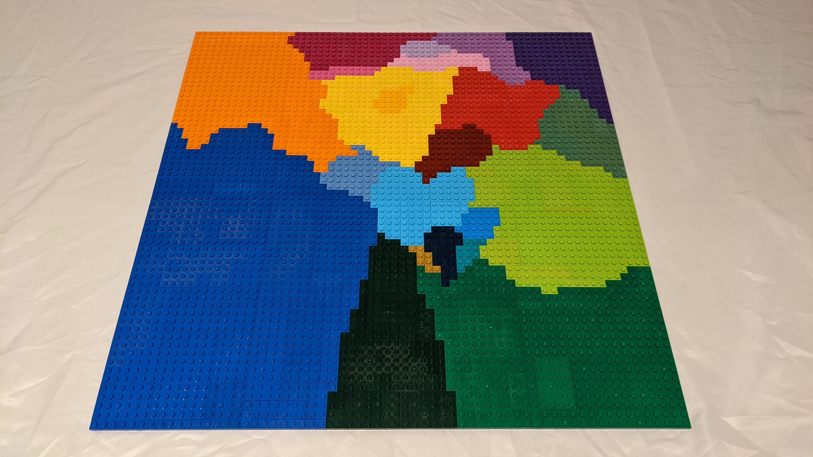 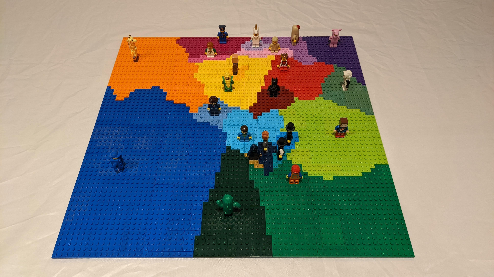 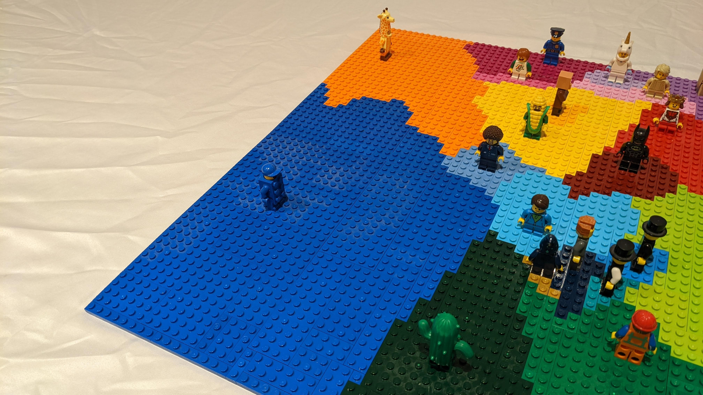 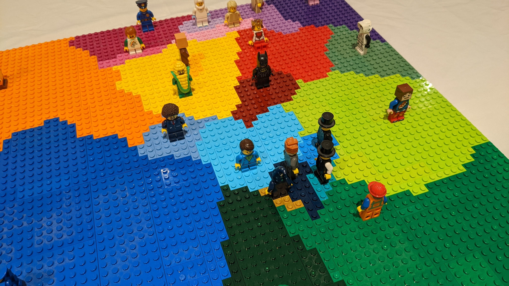 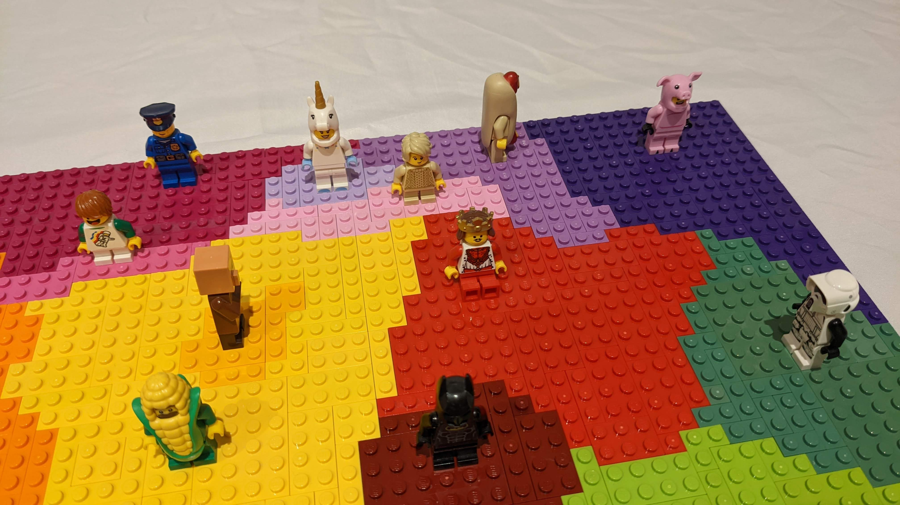
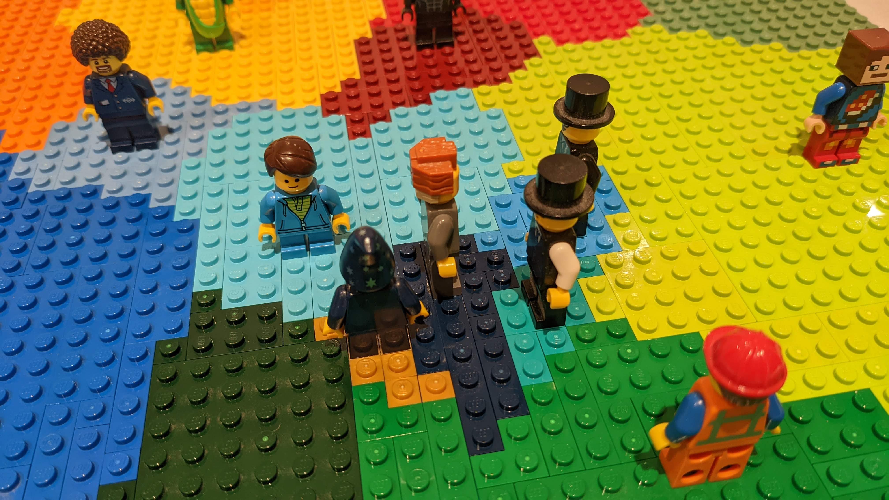
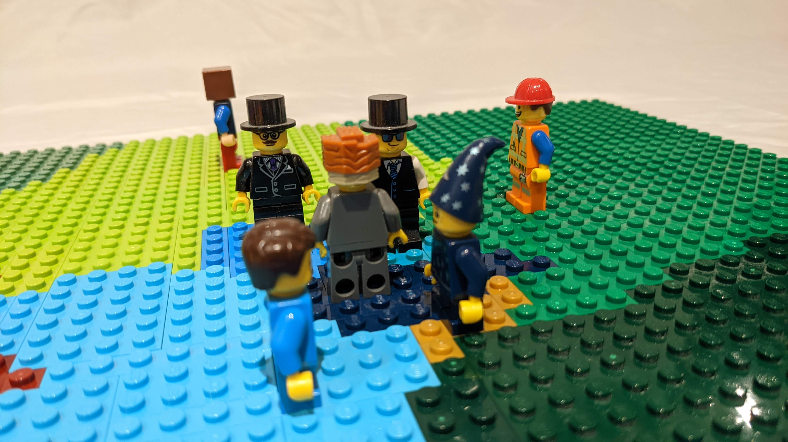
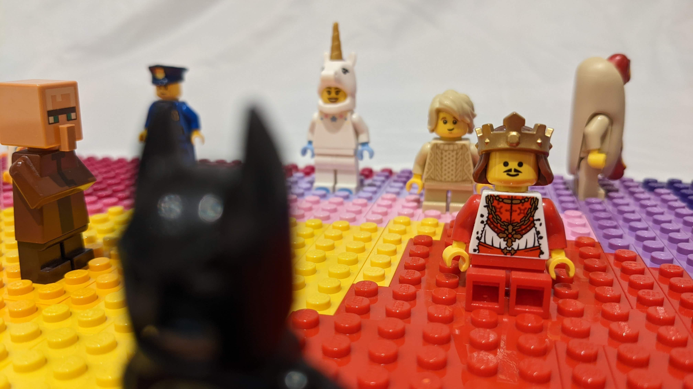
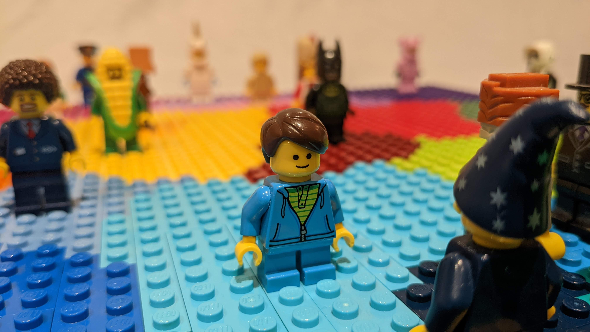
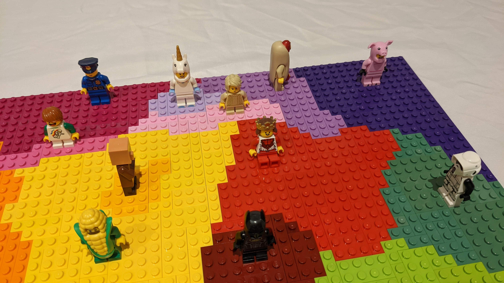
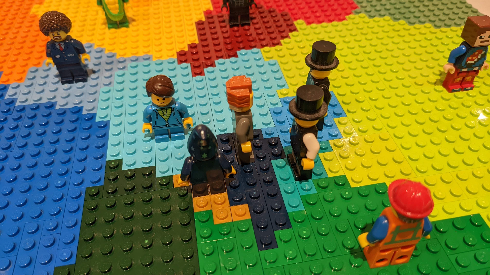
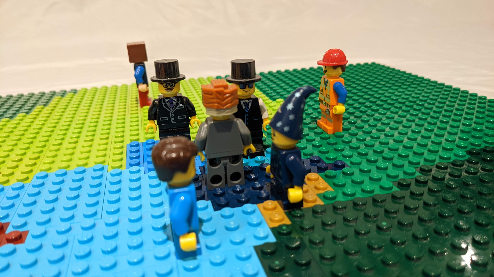
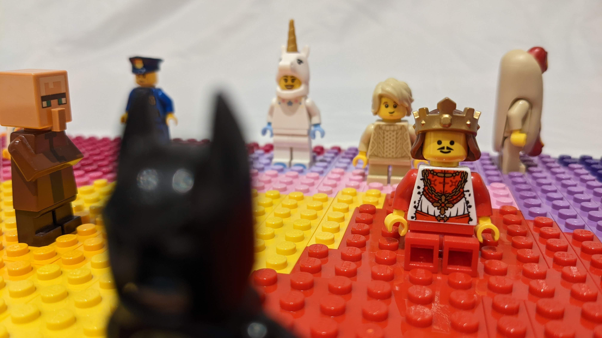
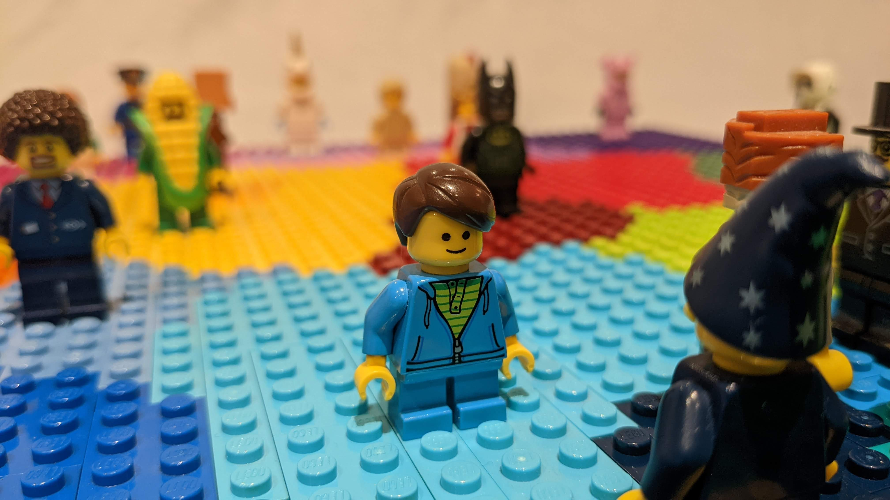